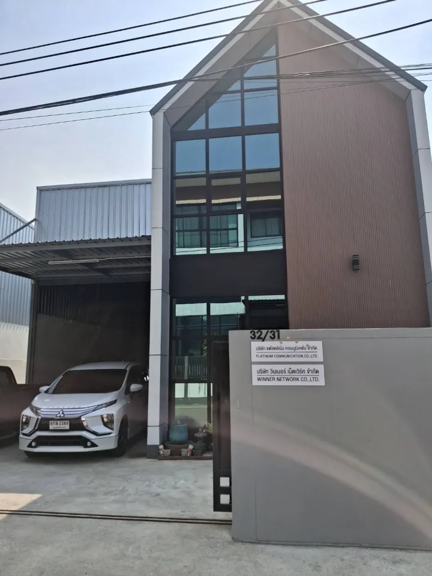

เกี่ยวกับ VERTEX TECHNOLOGY PLIS

ผู้นำด้านบริการพลังงานสะอาดครบวงจร
เราคือ VERTEX TECHNOLOGY PLUS CO, LTD ผู้เชี่ยวชาญด้านพลังงานหมุนเวียน พร้อมให้บริการครบวงจร (One Stop Service) ตั้งแต่ออกแบบ, ติดตั้ง, และซ่อมบำรุงระบบโซลาร์เซลล์ ด้วยทีมงานวิศวกรมืออาชีพและรับประกันผลงานยาวนานถึง 25 ปี
เรามุ่งมั่นในการให้บริการด้านพลังงานหมุนเวียนอย่างมีคุณภาพสูง เพื่อตอบสนองทุกความต้องการของลูกค้า และเป็นส่วนหนึ่งในการขับเคลื่อนสังคมไทยสู่การใช้พลังงานสะอาดอย่างยั่งยืน
ที่ตั้งสำนักงาน
ติดต่อเราได้ที่
บริษัท เวอร์เทค เทคโนโลยี พลัส จำกัด
เลขที่ 32/31 ซอยวัดลาดปลาดุก ตำบล บางคูรัด
อำเภอบางบัวทอง นนทบุรี 11110
เวลาทำการ: จันทร์ - ศุกร์, 9:00 - 18:00 น.
อีเมล: vertexplus99@gmail.com